Terrains Tactics — contrôle en jeu
Contrôle après gel des sources : 8 secteurs lancés depuis le mode personnalisé. Reliefs, matières et environnements dédiés sont visibles dans le vrai GameCanvas. Ces grilles sont des adaptations originales de lieux des œuvres citées ; elles ne sont pas des plans officiels reproduits à l’identique.
Mt. Nibel — rocky trails below the Nibel Reactor
Final Fantasy VII · Final Fantasy VII (1997)
Directive: tenir les points d ancrage
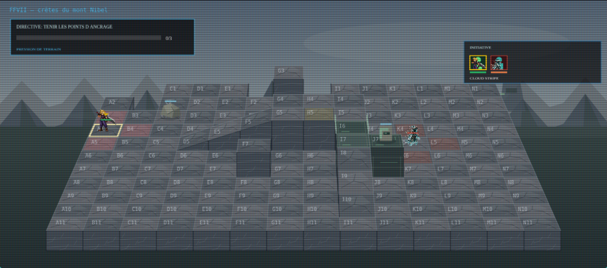
Vue mobile à 375 pixels
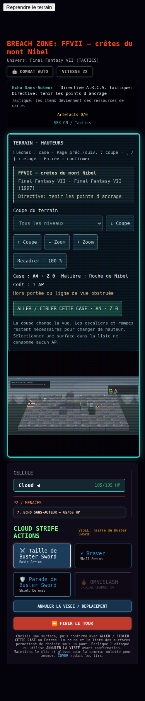
Archylte Steppe — eroded grassland and rocky knolls
Final Fantasy XIII · Final Fantasy XIII (2009)
Directive: tenir les points d ancrage
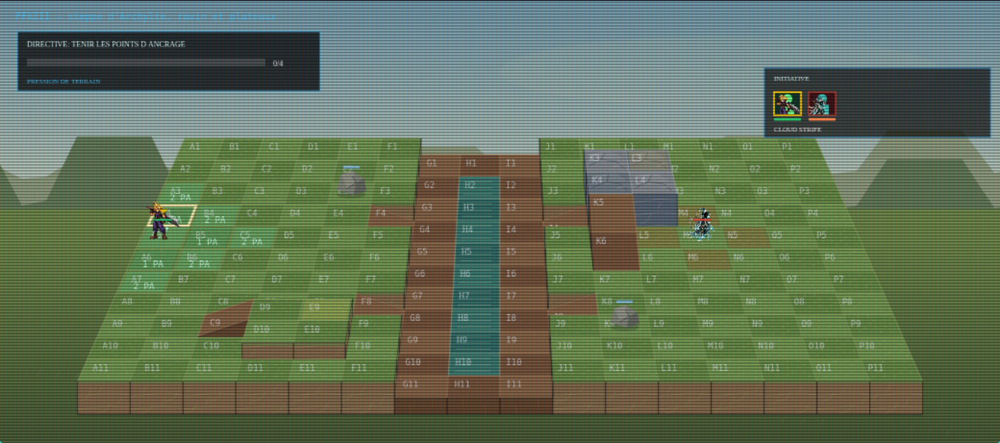
Vue mobile à 375 pixels
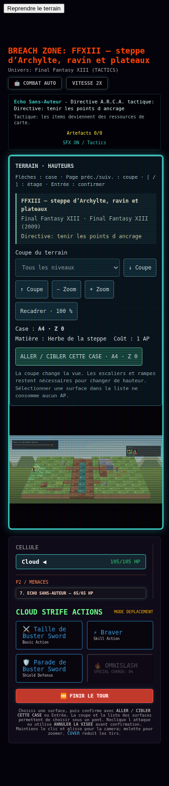
The Vesperpool — wetland shore and wooden fishing approaches
Final Fantasy XV · Final Fantasy XV (2016)
Directive: extraire deux agents lisibles
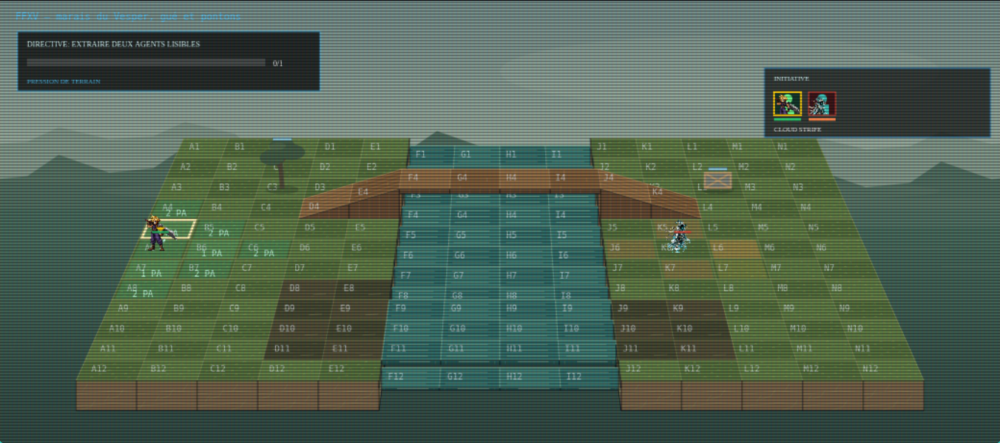
Vue mobile à 375 pixels
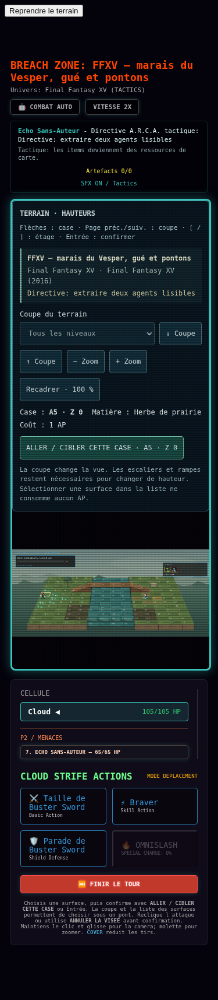
Caradhras — snowbound pass and sheltered ridge
The Lord of the Rings · The Lord of the Rings: The Fellowship of the Ring (2001, Peter Jackson)
Directive: extraire deux agents lisibles
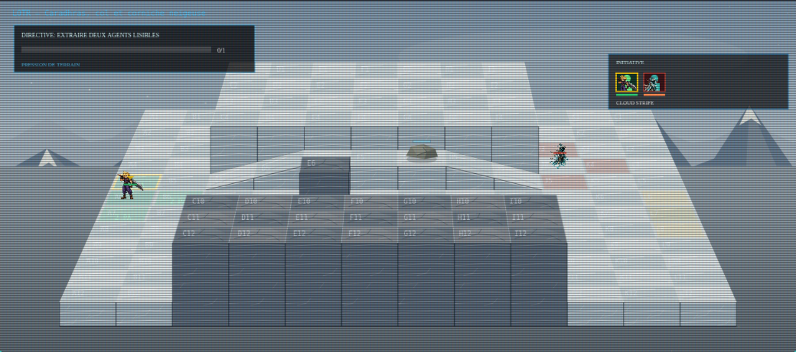
Vue mobile à 375 pixels
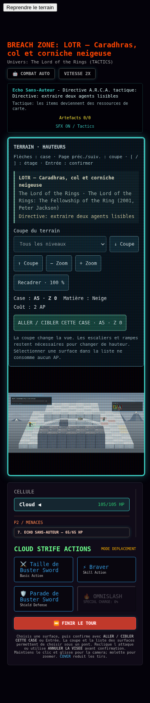
Ithilien — wooded banks and a reconnaissance ravine
The Lord of the Rings · The Lord of the Rings: The Two Towers (2002, Peter Jackson)
Directive: tenir les points d ancrage
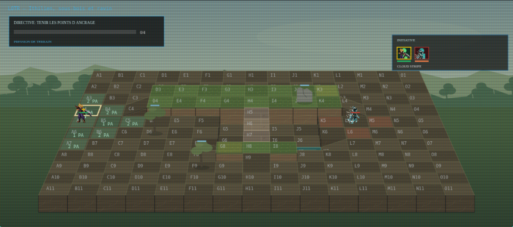
Vue mobile à 375 pixels
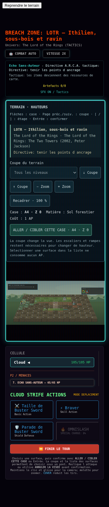
Darkroot Garden — overgrown stone terraces and woodland courtyard
Dark Souls · Dark Souls (2011)
Directive: recuperer les reliques Nexus
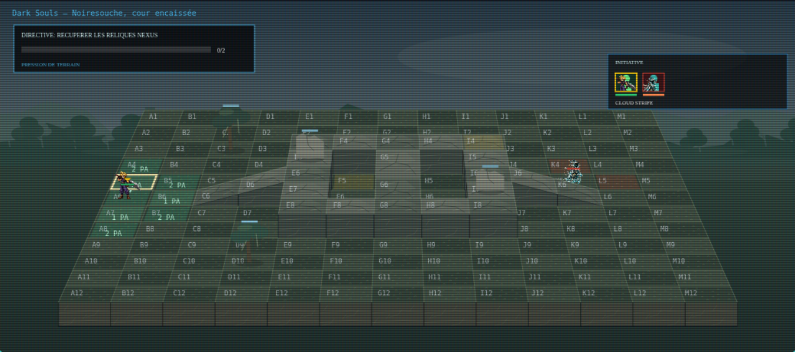
Vue mobile à 375 pixels
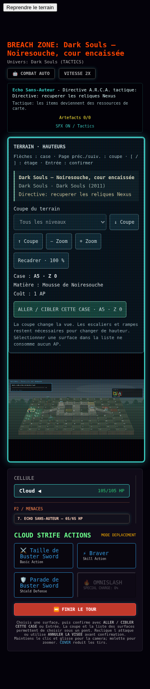
Therum — volcanic approach to the Prothean excavation
Mass Effect · Mass Effect (2007)
Directive: desactiver les verrous de faille
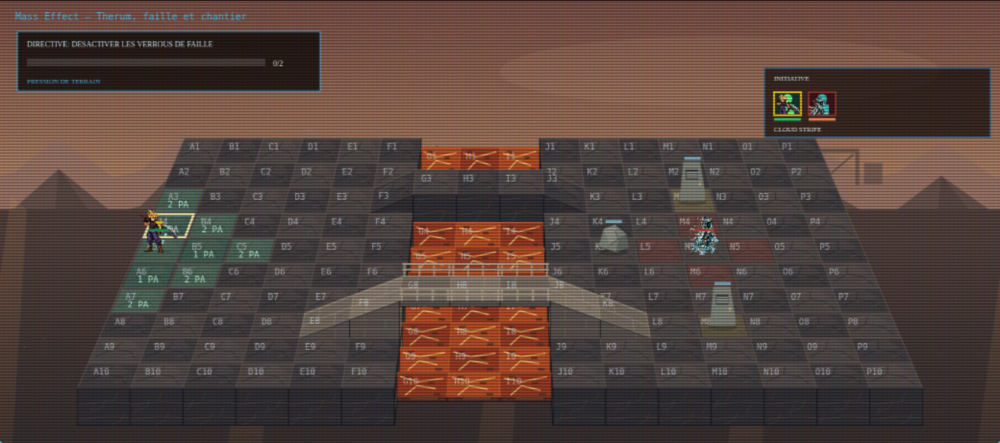
Vue mobile à 375 pixels
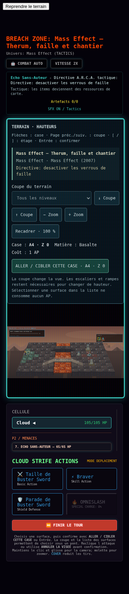
Valhalla — dedicated riverbank sector below a Forerunner ridge
Halo · Halo 3 (2007)
Directive: tenir les points d ancrage
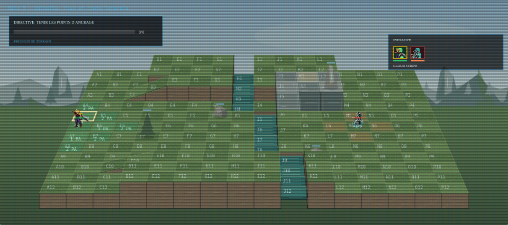
Vue mobile à 375 pixels
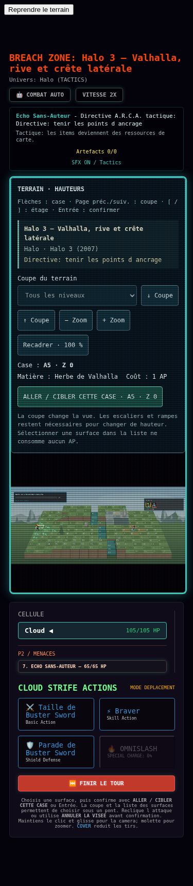